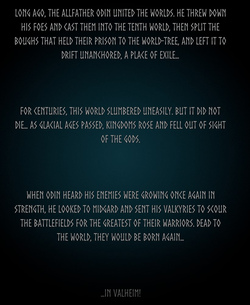
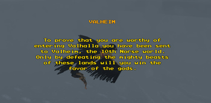

背景故事
本站支持中英文站内搜索。带 ↗ 的链接指向外部网站；各页来源版本见页脚。


数百年来，这个世界在不安中沉睡，却没有死去……冰河时代不断流逝，王国在诸神视线之外兴起又衰亡。
奥丁听闻敌人再次壮大，便望向米德加尔特，派女武神搜寻战场，寻找最伟大的战士。他们已在尘世死去，却将在此重生……
……在英灵神殿！
角色背景故事


为证明自身价值，你被送往北欧第10个世界——英灵神殿。只有在充满神话怪物和野兽的严酷环境中生存、战斗，才能向诸神证明自己。失败者只能前往赫尔冥界，灵魂在那里受折磨数百年。也许你会成为强大战士，赢得诸神眷顾，进入阿斯加尔德宏伟辽阔的英灵殿，与奥丁相伴。
符文石
符文石是刻红色符文的大岩石，记载背景故事及特定生物的实用提示。
福金
福金是会说话的大渡鸦，为初到英灵神殿世界的维京人指路。
雾尼
雾尼是会说话的大渡鸦，与福金一起，为初到迷雾之地的阵亡维京人提供指引。
梦境
玩家睡眠时可能做梦，部分梦提示后续首领所在生态区。
霍尔德
霍尔德是黑暗林山中的商人，有多种对话，部分透露背景故事。
希尔德
希尔德是青青草原中的商人，有多种对话，部分透露背景故事。
矮人
矮人是迷雾之地和灰烬之地中的被动人形生物，会与附近玩家交谈，各职业有自身台词。
赫沃克·血齿的旅程
趣闻
- 旧开场为：为证明你有资格进入英灵殿，你被送往北欧第十个世界英灵神殿。只有击败此地强大野兽，才能赢得诸神眷顾。
For centuries, this world slumbered uneasily. But it did not die... As glacial ages passed, kingdoms rose and fell out of sight of the gods.
When Odin heard his enemies were growing once again in strength, he looked to Midgard and sent his Valkyries to scour the battlefields for the greatest of their warriors. Dead to the world, they would be born again...
...In Valheim!
Character Lore
In order to prove your worth you have been sent to the 10th Norse world - Valheim. Only by surviving and fighting in a harsh environment with many mythical monsters and beasts will you prove your worth to the gods. For those who don't prove their worth though, the only place they will find is Hel - The underworld, where their soul will be tormented for centuries. Or maybe you will be one of the strong warriors who will prove their worth and earn the favor of the gods, then your place will be in Valhalla - a majestic, enormous hall located in Asgard, and by your side Odin.
Runestone
Runestones are large rocks with red runes written on them, containing lore and useful tips regarding certain creatures.
Hugin
Hugin is a large, talking raven who provides guidance to vikings that have newly arrived in the world of Valheim.
Munin
Munin is a large, talking raven who provides guidance to slain Vikings that have newly arrived in the Mistlands, along with Hugin.
Dreams
Dreams may occur while the player sleeps, some of them give hints about the biomes of upcoming bosses.
Haldor
Haldor is a merchant found in Black Forest. He speaks to the player with various quotes, some revealing a bit of lore.
Hildir
Hildir is a merchant found in Meadows. She speaks to the player with various quotes, some revealing a bit of lore.
Dvergrs
Dvergrs are passive humanoid creatures found in Mistlands and Ashlands. They talk to nearby players, each Dvergr class has its own quotes.
The Voyage of Hervor Bloodtooth
Trivia
- The old intro was: To prove you are worthy of entering Valhalla you have been sent to Valheim, the tenth Norse world. Only by defeating the mighty beasts of these lands will you win the favor of the Gods.